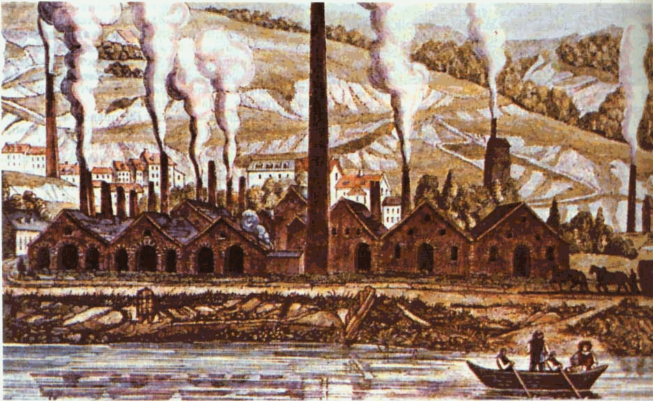
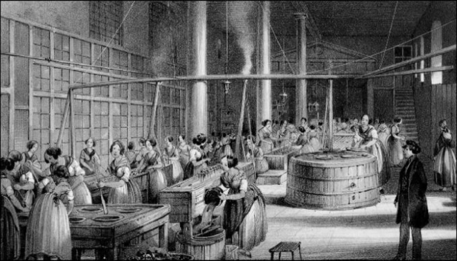
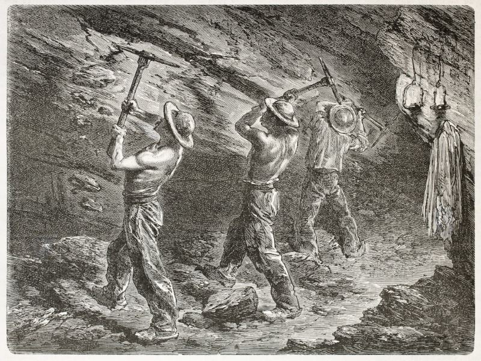
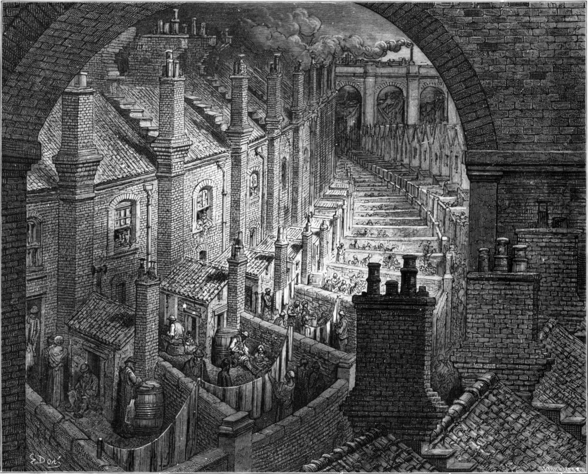

Con il passare del tempo le macchine per la produzione industriale divennero sempre più numerose e sempre più grandi, di conseguenza furono costruite le fabbriche, degli stabilimenti nei quali venivano posti grandi macchinari e migliaia di operai. Inizialmente sfruttavano l’energia idraulica ma col passare del tempo si passò a un energia termica.
Fino a quel momento tutti gli oggetti di uso quotidiano erano stati prodotti nelle botteghe artigiane. Ogni oggetto prodotto da lui era diverso dall’altro perchè poteva subire delle imperfezioni, con le fabbriche non fu più così. Il processo di lavorazione era suddiviso in una serie di operazioni semplici e ripetitive assegnate a operai diversi, i quali uno dopo l’altro eseguivano il proprio compito. Proprio qua nasce il concetto di divisione del lavoro.
Molti lavoratori sopportano con difficoltà il lavoro nelle fabbriche. Gli orari di lavoro non potevano essere stabiliti dai lavoratori stessi, operai e operaie iniziavano e terminavano la giornata di lavoro contemporaneamente, inoltre erano sottoposti a continuo controllo da sorveglianti. I salari erano bassi e le donne e i bambini erano pagati ancora meno dei maschi adulti. Nelle miniere il lavoro era ancora peggio, il lavoro era durissimo e spesso si verificavano incidenti a causa di crolli, allagamenti o esplosioni di gas.
Con la rivoluzione industriale molti lavoratori migrarono dalle campagne alle città in cerca di lavoro. Fu un fenomeno inatteso, di conseguenza le città si ingrandirono, ma in modo rapido e disordinato. Nei quartieri periferici si costruirono in fretta alloggi per gli operai, ma in modo molto caotico, a volte le abitazioni erano costituite da delle semplici baracche. Inoltre, le condizioni igieniche erano disastrose e di conseguenza si diffusero sempre più malattie infettive. La mortalità era elevata, la durata media di vita era di 35 anni per i borghesi e di soli 15 anni per le classi lavoratrici.
